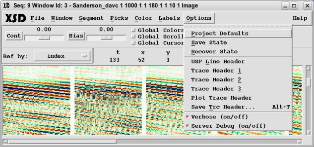
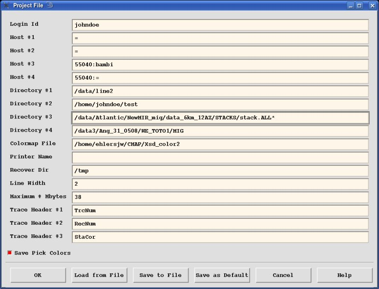
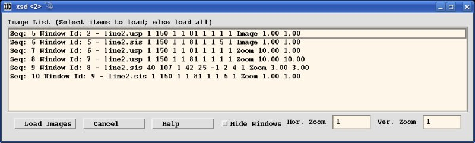
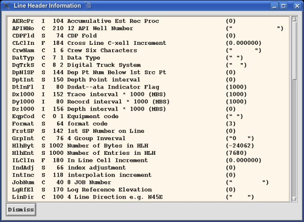
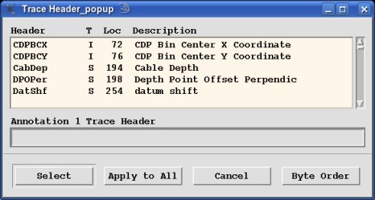
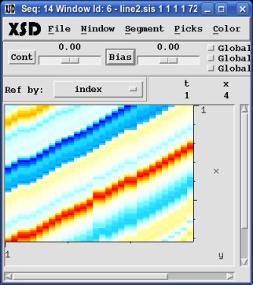

The "Options" menu panel provides several miscellaneous options for parameters,
traces and debug options.
- Project Defaults:
This option brings up the "Project File Window" where you define various XSD
parameters. Most of these are self-explanatory. You can "Save as Default", "Save to File"
or "Load from File".
- Recover Dir:
This is the directory where any "Save State" is performed.
- Line Width:
This is the width in pixels of pick segment lines.
- Maximum # Mbytes:
This is the number of Mbytes over which a verification window will pop-up
when reading data for a Display Window.

- Save State:
This option saves the current state of XSD saving all the non-animation
windows images to the "Recover Dir" directory. When XSD
has some error (such as a Segmentation Fault) the error is handled and a
window pops up with the error. This allows the user to save the current
state of the system after which XSD can be shutdown and restarted.
- Recover State:
This option will restore a previously save state and open up the "Load Images
Window" where you can select which images to restore.

- USP Line Header:

When the ddsServer sends data back to XSD a USP Line Header is generated from
whatever format the data exists on disk. This option opens up the "Line Header
Information Window" where the Line Header can be viewed.
- Trace Header 1/2/3:

These three options will pop-up the "Trace Header Selection Window" where you can
pick which trace header to display in the Display Window odometer section.
- Plot Trace Header:

This option will pop-up the "Trace Header Selection Window" where you can pick
which trace header to use in place of the Samples in the image. The trace header
values are scaled to the minimum and maximum values of the colormap. To redisplay
the original Samples, reselect the "Samples" to display as the Trace Header.
- Save Trc Header:
This option will create a file with selected trace header values.
- Verbose (on/off):
Select whether to turn on the verbose mode for XSD.Verbose information will be
printed to stderr.
- Server Debug (on/off):
Select whether to turn on the debug mode for the ddsServer where debug information
is printed to stderr from the ddsServer. The ddsServer must be restarted for
any change to take place in the ddsServer.